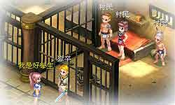
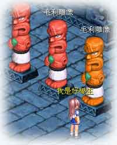

1.美人鱼事件：
正当玩家在北海的海岸边练功，欣赏着湛蓝的大海时，遇见了美人鱼尼厄丽德，美人鱼为了心爱的人愿意放弃自己的原形化身为人类，希望玩家帮他寻找特别的贝壳，以便制作药水化为人型。
玩家心疼她的无奈愿意帮忙，在帮她找到稀有的贝壳后，人鱼调制药剂化为人型开心的去找自己所爱的人。却意外看到自己的爱人已另结新欢，尼厄丽德因为无法伤害心爱的人所以伤心的离去，决定回到海边牺牲自己化为泡沫消失，为了感激玩家的善心，留下了遗书和匕首作为纪念。让人感到惋惜！ | |
| |
2.大教堂的异教徒：
怎么会有这么野蛮的事情发生呢？玩家进入基督村大教堂之后，会看到基督村里相信异教的村民被一群村民押入地窖，看到这种不合理的事情，玩家们当然要见义勇为啦！
向神父询问之后才了解，原来是因对宗教的观念不同，所以才会有这样的情况发生，并且得知地窖钥匙在村长手上！急忙赶到村长家，却无法从村长手中得到钥匙的玩家，正准备另外寻找办法时，被村长的管家叫住，获得钥匙！也顺利救出了被关的村民们！ | |
| |
3.圣灵守护者：
在南岛下方有个独立的小岛---司徒华岛，玩家们必须想办法从南岛过去司徒华岛！
司徒华岛的地底迷宫里，圣灵守护者长久以来守护着神圣的圣灵。一进入迷宫遇到守卫就会被严厉的警告，诡谲的气氛，似乎会遇到一些可怕的东西…玩家拿到石雕钥匙之后马上进入圣灵寝，发现了四个活雕像。在好不容易打败石像之后，竟然还出现了…。
至于是什么就请玩家亲自去试试看了，建议大家跟圣灵守护者接触前先练练等级，这不是个轻易就能通过的关卡喔！ | |
| |
4.活人祭：
文明发达的玛雅居然也有这种传统又血腥残忍的仪式---活人祭！
玩家进入民宅后看到小女孩莎莎正被祭师他们押去当祭品却没人阻止，这种野蛮残暴的情况，让人觉得心寒！信仰真的比人命重要吗？
莎莎的母亲很舍不得她，请求玩家能够帮忙救回小女孩。于是，玩家便前去寻找被押走的莎莎，正当玩家毫无头蓄着急的四处寻找时，刚好神池边的祭师请玩家一同参观玛雅的祭典。在此时，也终于找到了被当成祭品奉献的莎莎。
来不及阻止！莎莎已被推入了神池中！玩家也奋不顾身的跳入…没想到神池底下别有洞天，莎莎正躺卧在疑似解剖台的平台上。正当玩家准备摇醒莎莎一同离开时，却凭空出现了一个令人惊异的生物…远古的玛雅之谜是否会从这次的事件中解开呢？喜欢挑战的玩家千万不要错过！ | |
| |
5.美丽狐仙：
中国的小渔村平静又朴实，玩家舒服自在的漫游在村庄中拜访民居时，却差点被往外冲的不明物体撞到！
一位看似身强体壮的年轻人昏倒在地上，而年迈的婆婆伤心的在一旁哭泣…婆婆告诉玩家刚刚那往外冲的不明物体是只白狐狸，而倒在地上的年轻人阿忠应该是因为那只白狐而昏迷的。
玩家看着无助的婆婆，当然要帮帮她啦！于是在小渔村中四处搜查白狐的踪迹，最后在树林中发现了��。话都还没讲清楚就打了起来，打赢了之后，白狐却化身为一位美丽的女子……这究竟是怎么一回事？ | |